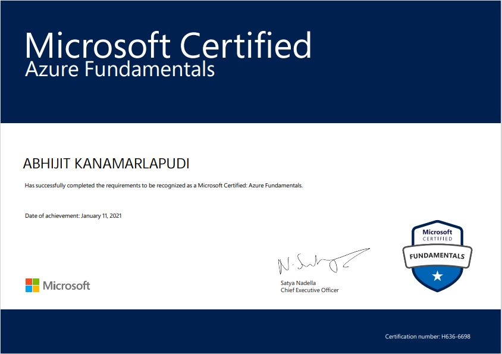
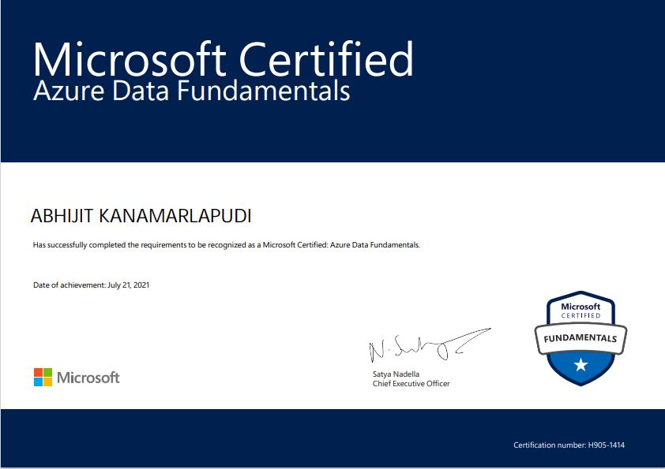
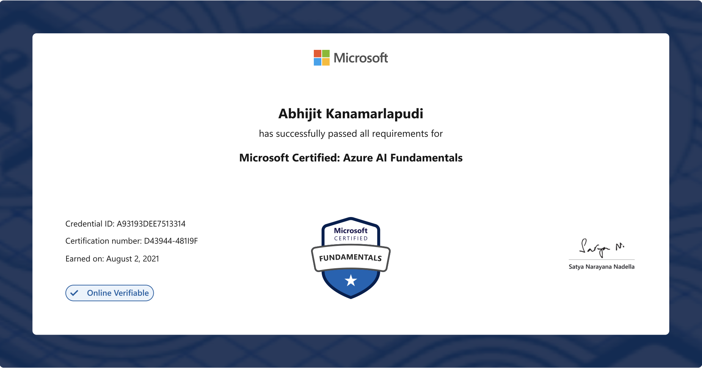
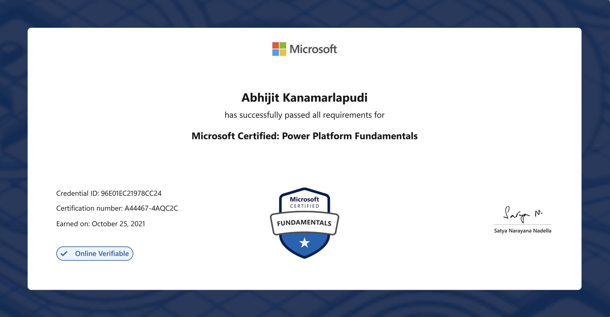
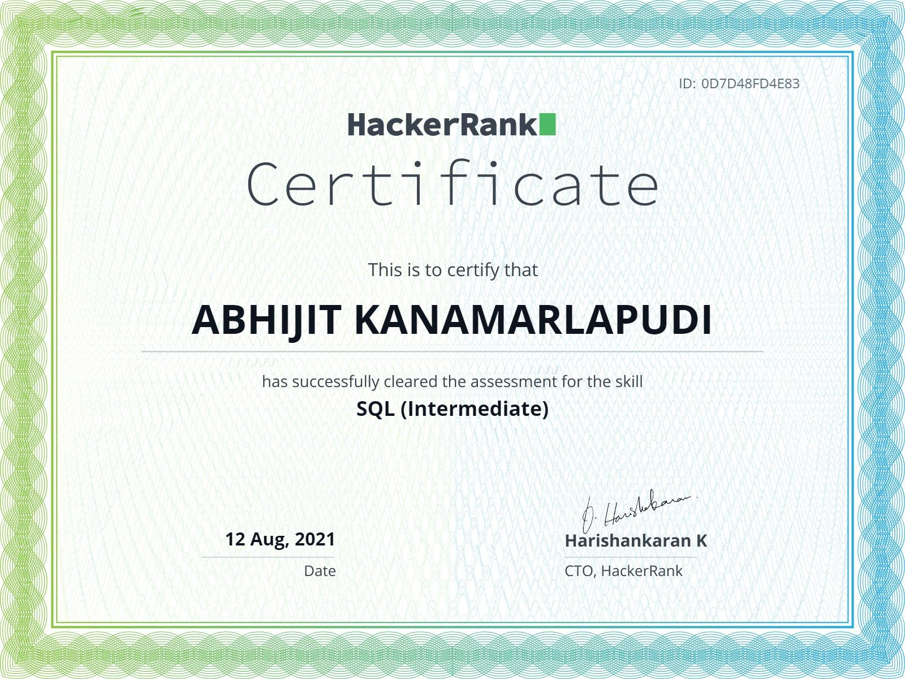

Migration of On-Premises DW to Azure SQL DB
Migrated an on-premises data warehouse to Azure using Azure Data Factory, Azure Blob Storage, Azure SQL DB, Logic Apps, and Key Vault.
ADFAzure SQL DBBlob StorageLogic AppsKey Vault
Technical Lead • Data Engineering
Azure Data Factory • Azure SQL • SQL Server • SSIS • Power BI • SSRS
High-impact Lead Data Engineer with experience designing scalable data platforms, migrating enterprise data warehouses to Azure, optimizing ETL pipelines, and delivering reporting solutions that improve performance, security, and business visibility.
About
I am a Technical Lead at Archents working with RXO Logistics since August 2018. My work spans Azure data platform migration, ETL and ELT development, SQL optimization, data warehouse maintenance, Power BI and SSRS reporting, and secure enterprise data integration. I focus on building reliable, scalable, and production-ready data solutions from design to deployment.
Core Expertise
Journey
Aug 2018 – Present
Archents • Client: RXO Logistics
Project Focus Areas
Azure • SQL Server • BI Platforms
Work Showcase
Click any project to view detailed responsibilities in a timeline popup.
Migrated an on-premises data warehouse to Azure using Azure Data Factory, Azure Blob Storage, Azure SQL DB, Logic Apps, and Key Vault.
Migrated Azure services across tenants including Azure SQL Database, Data Factory, Logic Apps, Storage Accounts, SharePoint, Runbooks, and Power BI Gateways.
Developed Power BI dashboards, DAX measures, SSRS subscriptions, and ETL workflows while improving data accuracy, system performance, and reporting reliability.
Designed and maintained data warehouse objects, created procedures, functions, and views, optimized T-SQL performance with clustered and non-clustered indexes.
Credentials
Auto slideshow of certifications. It loops continuously from right to left. You can also use the arrows or click any certificate for a larger preview.

Microsoft
2021
Microsoft
2021
Microsoft
2021
Microsoft
2021
HackerRank
2021Academics
College: VR Siddhartha Engineering College, Vijayawada
Duration: 2014 – 2018
CGPA: 9.28
Let's Connect
Email: kanamarlapudiabhijit@gmail.com
Phone: +91-7842595550
Location: Narasaraopet, AP, India
Languages: English, Telugu, Hindi